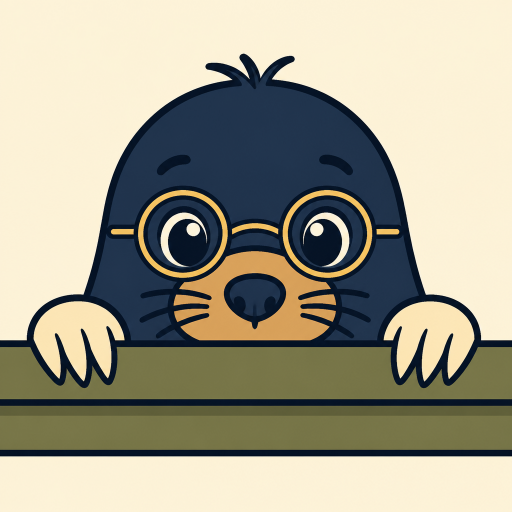
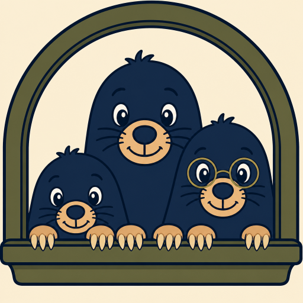
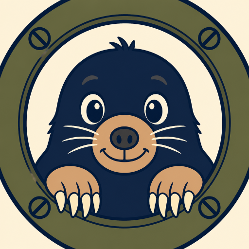
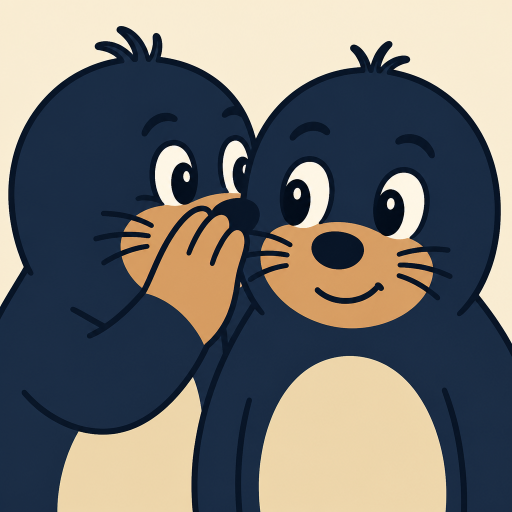

The button at the bottom right of every page is 48 pixels across, round, with a border and a shadow, and it carries a black dot today. These are pictures to put there instead: each shows a mole, or a group of moles, holding on to the edge of a window. Nothing here is wired into the product — the owner chooses.
Each row shows the whole picture, then the same picture cut to the button's real size on a light page and on a dark one, with today's dot beside it for comparison. The last two rows are drawn by hand as SVG, so they stay sharp at any size and weigh under two kilobytes.

The first idea. One mole in round glasses, up to its eyes over a green sill, both clawed paws on the ledge. The face fills the circle and reads at 48 pixels.

The second idea. Three moles of different heights in an arched window, six paws on the ledge, one in glasses. It is the warmest picture of the set and the busiest at 48 pixels: at that size it reads as several moles rather than as three.

Mine. A mole in a round ship's porthole with a bolted olive rim, both paws on it. The round frame is already the shape of the button, so it loses nothing to the crop and it is the sharpest of them all at 48 pixels.

Mine. One mole whispering into the other's ear, a paw raised beside its mouth. At 48 pixels the whisper is lost and it reads as two friendly faces, which is not the worst thing a chat button could say.
The same idea drawn by hand on a 48-unit grid, so nothing is resampled at the size it is used. 1.8 kB, flat shapes, no gradient. Looked at from 24 to 128 pixels on both grounds.
The porthole drawn by hand, 1.9 kB. The olive rim does the job the button's border does today, so this one could replace the whole button rather than sit inside it.